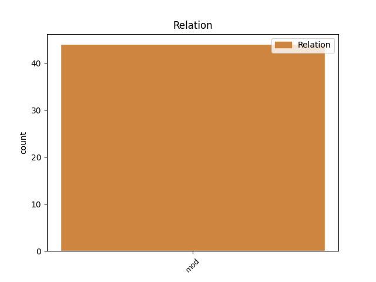
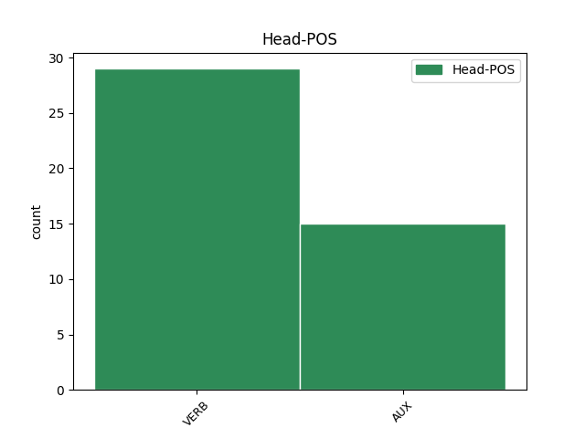
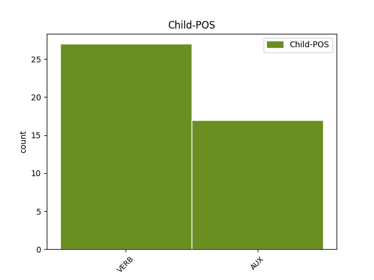

Distribution of features within this leaf



Agreement Rules sorted by frequency.
- When the dependent token is the modifer(mod) of the head token, and the dependent token is VERB.
1 En _ _ _ _ 0 _ _ _
2 cinq _ _ _ _ 0 _ _ _
3 ans _ _ _ _ 0 _ _ _
4 , _ _ _ _ 0 _ _ _
5 pour _ _ _ _ 0 _ _ _
6 la _ _ _ _ 0 _ _ _
7 seule _ _ _ _ 0 _ _ _
8 période _ _ _ _ 0 _ _ _
9 comprise _ _ _ _ 0 _ _ _
10 entre _ _ _ _ 0 _ _ _
11 1990 _ _ _ _ 0 _ _ _
12 et _ _ _ _ 0 _ _ _
13 1995 _ _ _ _ 0 _ _ _
14 , _ _ _ _ 0 _ _ _
15 le _ _ _ _ 0 _ _ _
16 RPR _ _ _ _ 0 _ _ _
17 recevra recevoir VERB _ Mood=Ind|Number=Sing|Person=3|Tense=Fut|VerbForm=Fin 0 _ _ _
18 53 _ _ _ _ 0 _ _ _
19 millions _ _ _ _ 0 _ _ _
20 de _ _ _ _ 0 _ _ _
21 francs _ _ _ _ 0 _ _ _
22 , _ _ _ _ 0 _ _ _
23 le _ _ _ _ 0 _ _ _
24 PS _ _ _ _ 0 _ _ _
25 arrive arriver VERB _ Mood=Ind|Number=Sing|Person=3|Tense=Pres|VerbForm=Fin 17 mod _ _
26 en _ _ _ _ 0 _ _ _
27 deuxième _ _ _ _ 0 _ _ _
28 position _ _ _ _ 0 _ _ _
29 , _ _ _ _ 0 _ _ _
30 avec _ _ _ _ 0 _ _ _
31 46,7 _ _ _ _ 0 _ _ _
32 millions _ _ _ _ 0 _ _ _
33 , _ _ _ _ 0 _ _ _
34 suivi _ _ _ _ 0 _ _ _
35 de _ _ _ _ 0 _ _ _
36 le _ _ _ _ 0 _ _ _
37 Parti _ _ _ _ 0 _ _ _
38 républicain _ _ _ _ 0 _ _ _
39 ( _ _ _ _ 0 _ _ _
40 32,6 _ _ _ _ 0 _ _ _
41 millions _ _ _ _ 0 _ _ _
42 ) _ _ _ _ 0 _ _ _
43 et _ _ _ _ 0 _ _ _
44 de _ _ _ _ 0 _ _ _
45 le _ _ _ _ 0 _ _ _
46 PCF _ _ _ _ 0 _ _ _
47 ( _ _ _ _ 0 _ _ _
48 21 _ _ _ _ 0 _ _ _
49 millions _ _ _ _ 0 _ _ _
50 ) _ _ _ _ 0 _ _ _
51 . _ _ _ _ 0 _ _ _
1 René _ _ _ _ 0 _ _ _
2 Mayer _ _ _ _ 0 _ _ _
3 , _ _ _ _ 0 _ _ _
4 Président _ _ _ _ 0 _ _ _
5 de _ _ _ _ 0 _ _ _
6 le _ _ _ _ 0 _ _ _
7 Conseil _ _ _ _ 0 _ _ _
8 , _ _ _ _ 0 _ _ _
9 y _ _ _ _ 0 _ _ _
10 mit mettre VERB _ Mood=Ind|Number=Sing|Person=3|Tense=Past|VerbForm=Fin 0 _ _ _
11 fin _ _ _ _ 0 _ _ _
12 en _ _ _ _ 0 _ _ _
13 1953 _ _ _ _ 0 _ _ _
14 en _ _ _ _ 0 _ _ _
15 ramenant _ _ _ _ 0 _ _ _
16 le _ _ _ _ 0 _ _ _
17 taux _ _ _ _ 0 _ _ _
18 de _ _ _ _ 0 _ _ _
19 les _ _ _ _ 0 _ _ _
20 piastres _ _ _ _ 0 _ _ _
21 à _ _ _ _ 0 _ _ _
22 10 _ _ _ _ 0 _ _ _
23 francs _ _ _ _ 0 _ _ _
24 , _ _ _ _ 0 _ _ _
25 un _ _ _ _ 0 _ _ _
26 cours _ _ _ _ 0 _ _ _
27 plus _ _ _ _ 0 _ _ _
28 réaliste _ _ _ _ 0 _ _ _
29 , _ _ _ _ 0 _ _ _
30 mais _ _ _ _ 0 _ _ _
31 ce _ _ _ _ 0 _ _ _
32 en _ _ _ _ 0 _ _ _
33 violation _ _ _ _ 0 _ _ _
34 de _ _ _ _ 0 _ _ _
35 les _ _ _ _ 0 _ _ _
36 accords _ _ _ _ 0 _ _ _
37 de _ _ _ _ 0 _ _ _
38 le _ _ _ _ 0 _ _ _
39 8 _ _ _ _ 0 _ _ _
40 Mars _ _ _ _ 0 _ _ _
41 1949 _ _ _ _ 0 _ _ _
42 et _ _ _ _ 0 _ _ _
43 de _ _ _ _ 0 _ _ _
44 les _ _ _ _ 0 _ _ _
45 accords _ _ _ _ 0 _ _ _
46 de _ _ _ _ 0 _ _ _
47 Pau _ _ _ _ 0 _ _ _
48 de _ _ _ _ 0 _ _ _
49 1950 _ _ _ _ 0 _ _ _
50 ; _ _ _ _ 0 _ _ _
51 les _ _ _ _ 0 _ _ _
52 États _ _ _ _ 0 _ _ _
53 associés _ _ _ _ 0 _ _ _
54 de _ _ _ _ 0 _ _ _
55 le _ _ _ _ 0 _ _ _
56 Cambodge _ _ _ _ 0 _ _ _
57 , _ _ _ _ 0 _ _ _
58 Laos _ _ _ _ 0 _ _ _
59 et _ _ _ _ 0 _ _ _
60 Viêtnam _ _ _ _ 0 _ _ _
61 ne _ _ _ _ 0 _ _ _
62 furent être AUX _ Mood=Ind|Number=Plur|Person=3|Tense=Past|VerbForm=Fin 10 mod _ _
63 pas _ _ _ _ 0 _ _ _
64 consultés _ _ _ _ 0 _ _ _
65 . _ _ _ _ 0 _ _ _
Disagree Examples:
1 Bien _ _ _ _ 0 _ _ _
2 sûr _ _ _ _ 0 _ _ _
3 , _ _ _ _ 0 _ _ _
4 Pablo _ _ _ _ 0 _ _ _
5 Correa _ _ _ _ 0 _ _ _
6 n' _ _ _ _ 0 _ _ _
7 a avoir AUX _ Mood=Ind|Number=Sing|Person=3|Tense=Pres|VerbForm=Fin 0 _ _ _
8 obtenu _ _ _ _ 0 _ _ _
9 aucune _ _ _ _ 0 _ _ _
10 garantie _ _ _ _ 0 _ _ _
11 concernant _ _ _ _ 0 _ _ _
12 une _ _ _ _ 0 _ _ _
13 place _ _ _ _ 0 _ _ _
14 de _ _ _ _ 0 _ _ _
15 titulaire _ _ _ _ 0 _ _ _
16 : _ _ _ _ 0 _ _ _
17 " _ _ _ _ 0 _ _ _
18 Je _ _ _ _ 0 _ _ _
19 ne _ _ _ _ 0 _ _ _
20 revendique revendiquer VERB _ Mood=Ind|Number=Sing|Person=1|Tense=Pres|VerbForm=Fin 7 mod _ _
21 rien _ _ _ _ 0 _ _ _
22 , _ _ _ _ 0 _ _ _
23 mais _ _ _ _ 0 _ _ _
24 je _ _ _ _ 0 _ _ _
25 connais _ _ _ _ 0 _ _ _
26 mes _ _ _ _ 0 _ _ _
27 qualités _ _ _ _ 0 _ _ _
28 , _ _ _ _ 0 _ _ _
29 mon _ _ _ _ 0 _ _ _
30 envie _ _ _ _ 0 _ _ _
31 et _ _ _ _ 0 _ _ _
32 je _ _ _ _ 0 _ _ _
33 sens _ _ _ _ 0 _ _ _
34 que _ _ _ _ 0 _ _ _
35 je _ _ _ _ 0 _ _ _
36 peux _ _ _ _ 0 _ _ _
37 jouer _ _ _ _ 0 _ _ _
38 plus _ _ _ _ 0 _ _ _
39 que _ _ _ _ 0 _ _ _
40 la _ _ _ _ 0 _ _ _
41 saison _ _ _ _ 0 _ _ _
42 dernière _ _ _ _ 0 _ _ _
43 . _ _ _ _ 0 _ _ _
1 J' _ _ _ _ 0 _ _ _
2 approuve approuver VERB _ Mood=Ind|Number=Sing|Person=1|Tense=Pres|VerbForm=Fin 0 _ _ _
3 ce _ _ _ _ 0 _ _ _
4 qu' _ _ _ _ 0 _ _ _
5 a _ _ _ _ 0 _ _ _
6 dit _ _ _ _ 0 _ _ _
7 M. _ _ _ _ 0 _ _ _
8 Sakellariou _ _ _ _ 0 _ _ _
9 : _ _ _ _ 0 _ _ _
10 la _ _ _ _ 0 _ _ _
11 communauté _ _ _ _ 0 _ _ _
12 internationale _ _ _ _ 0 _ _ _
13 doit devoir VERB _ Mood=Ind|Number=Sing|Person=3|Tense=Pres|VerbForm=Fin 2 mod _ _
14 envoyer _ _ _ _ 0 _ _ _
15 les _ _ _ _ 0 _ _ _
16 forces _ _ _ _ 0 _ _ _
17 de _ _ _ _ 0 _ _ _
18 police _ _ _ _ 0 _ _ _
19 qu' _ _ _ _ 0 _ _ _
20 elles _ _ _ _ 0 _ _ _
21 a _ _ _ _ 0 _ _ _
22 promises _ _ _ _ 0 _ _ _
23 . _ _ _ _ 0 _ _ _
1 Un _ _ _ _ 0 _ _ _
2 tiers _ _ _ _ 0 _ _ _
3 de _ _ _ _ 0 _ _ _
4 ces _ _ _ _ 0 _ _ _
5 policiers _ _ _ _ 0 _ _ _
6 sont être AUX _ Mood=Ind|Number=Plur|Person=3|Tense=Pres|VerbForm=Fin 0 _ _ _
7 arrivés _ _ _ _ 0 _ _ _
8 , _ _ _ _ 0 _ _ _
9 il _ _ _ _ 0 _ _ _
10 reste _ _ _ _ 0 _ _ _
11 deux _ _ _ _ 0 _ _ _
12 tiers _ _ _ _ 0 _ _ _
13 pour _ _ _ _ 0 _ _ _
14 arriver _ _ _ _ 0 _ _ _
15 à _ _ _ _ 0 _ _ _
16 le _ _ _ _ 0 _ _ _
17 compte _ _ _ _ 0 _ _ _
18 je _ _ _ _ 0 _ _ _
19 crois croire VERB _ Mood=Ind|Number=Sing|Person=1|Tense=Pres|VerbForm=Fin 6 mod _ _
20 que _ _ _ _ 0 _ _ _
21 nous _ _ _ _ 0 _ _ _
22 devons _ _ _ _ 0 _ _ _
23 le _ _ _ _ 0 _ _ _
24 faire _ _ _ _ 0 _ _ _
25 . _ _ _ _ 0 _ _ _
1 Les _ _ _ _ 0 _ _ _
2 camps _ _ _ _ 0 _ _ _
3 de _ _ _ _ 0 _ _ _
4 filtration _ _ _ _ 0 _ _ _
5 sont être AUX _ Mood=Ind|Number=Plur|Person=3|Tense=Pres|VerbForm=Fin 0 _ _ _
6 des _ _ _ _ 0 _ _ _
7 camps _ _ _ _ 0 _ _ _
8 de _ _ _ _ 0 _ _ _
9 torture _ _ _ _ 0 _ _ _
10 , _ _ _ _ 0 _ _ _
11 de _ _ _ _ 0 _ _ _
12 viols _ _ _ _ 0 _ _ _
13 , _ _ _ _ 0 _ _ _
14 de _ _ _ _ 0 _ _ _
15 violations _ _ _ _ 0 _ _ _
16 : _ _ _ _ 0 _ _ _
17 nous _ _ _ _ 0 _ _ _
18 le _ _ _ _ 0 _ _ _
19 savons savoir VERB _ Mood=Ind|Number=Plur|Person=1|Tense=Pres|VerbForm=Fin 5 mod _ _
20 aujourd'hui _ _ _ _ 0 _ _ _
21 . _ _ _ _ 0 _ _ _
1 Mais _ _ _ _ 0 _ _ _
2 je _ _ _ _ 0 _ _ _
3 me _ _ _ _ 0 _ _ _
4 dois _ _ _ _ 0 _ _ _
5 de _ _ _ _ 0 _ _ _
6 souligner _ _ _ _ 0 _ _ _
7 qu' _ _ _ _ 0 _ _ _
8 elle _ _ _ _ 0 _ _ _
9 est _ _ _ _ 0 _ _ _
10 nécessaire _ _ _ _ 0 _ _ _
11 , _ _ _ _ 0 _ _ _
12 indispensable _ _ _ _ 0 _ _ _
13 , _ _ _ _ 0 _ _ _
14 notamment _ _ _ _ 0 _ _ _
15 parce _ _ _ _ 0 _ _ _
16 qu' _ _ _ _ 0 _ _ _
17 avant _ _ _ _ 0 _ _ _
18 tout _ _ _ _ 0 _ _ _
19 , _ _ _ _ 0 _ _ _
20 nous _ _ _ _ 0 _ _ _
21 en _ _ _ _ 0 _ _ _
22 convenons convenir VERB _ Mood=Ind|Number=Plur|Person=1|Tense=Pres|VerbForm=Fin 37 mod _ _
23 tous _ _ _ _ 0 _ _ _
24 , _ _ _ _ 0 _ _ _
25 le _ _ _ _ 0 _ _ _
26 réexamen _ _ _ _ 0 _ _ _
27 actuel _ _ _ _ 0 _ _ _
28 de _ _ _ _ 0 _ _ _
29 le _ _ _ _ 0 _ _ _
30 mode _ _ _ _ 0 _ _ _
31 de _ _ _ _ 0 _ _ _
32 fonctionnement _ _ _ _ 0 _ _ _
33 de _ _ _ _ 0 _ _ _
34 l' _ _ _ _ 0 _ _ _
35 Union _ _ _ _ 0 _ _ _
36 européenne _ _ _ _ 0 _ _ _
37 est être AUX _ Mood=Ind|Number=Sing|Person=3|Tense=Pres|VerbForm=Fin 0 _ _ _
38 directement _ _ _ _ 0 _ _ _
39 lié _ _ _ _ 0 _ _ _
40 à _ _ _ _ 0 _ _ _
41 le _ _ _ _ 0 _ _ _
42 grand _ _ _ _ 0 _ _ _
43 défi _ _ _ _ 0 _ _ _
44 que _ _ _ _ 0 _ _ _
45 constitue _ _ _ _ 0 _ _ _
46 l' _ _ _ _ 0 _ _ _
47 élargissement _ _ _ _ 0 _ _ _
48 . _ _ _ _ 0 _ _ _